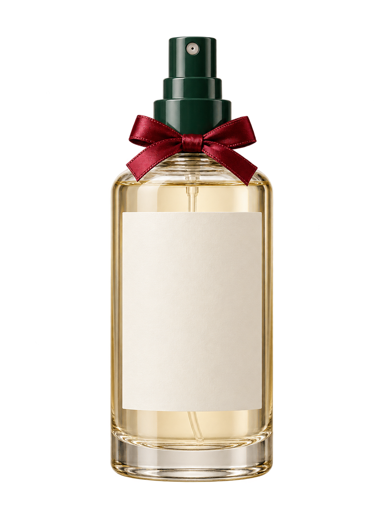
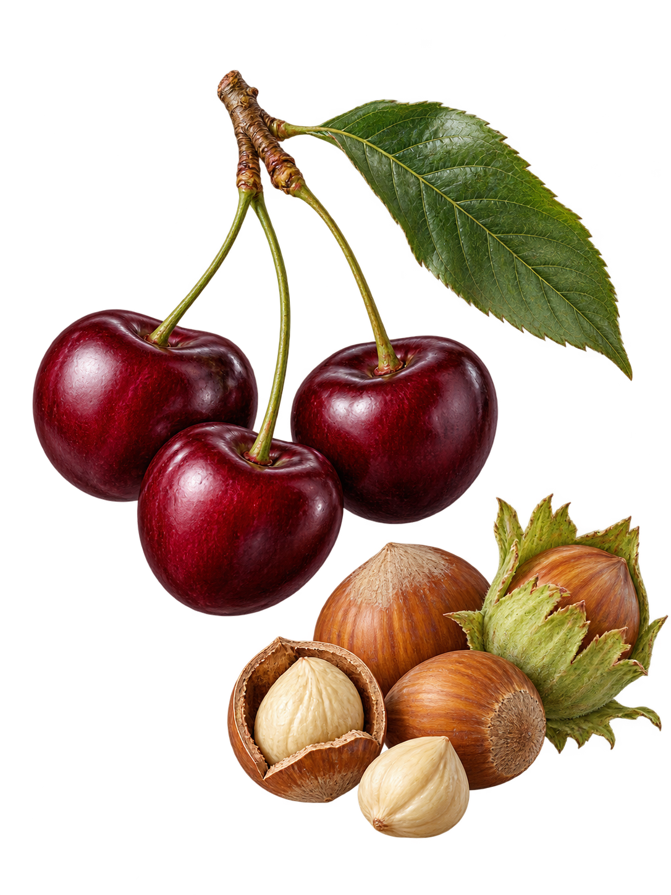

FULLORE · ESPECIAL DE NATALCOLEÇÃO FESTIVA · 03 / 05
Cereja e Avelã
FULLORE · HOME SPRAY · 120 ml
EDIÇÃO LIMITADA · PRODUTO VEGANO
Cores para celebrar

 Cereja
Cereja& AvelãHOME SPRAY120 ml

Fruta + maciez
O encontro central desta interpretação gourmand.
Vinho + verde
O contraste de cores conduz a identidade natalina.
Brilho + textura
Superfícies distintas sugerem contraste sem acrescentar notas.
Marfim + respiro
Uma base clara para os detalhes da celebração.
Direção editorial
Cores e materiais são associações poéticas, não ingredientes ou receitas de mistura.
Produto meramente ilustrativo.